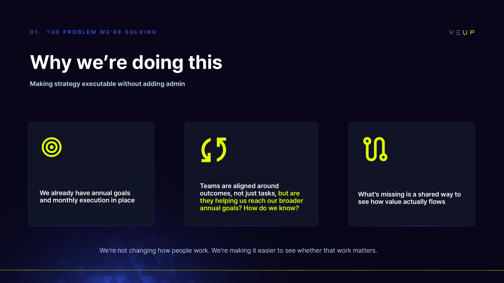
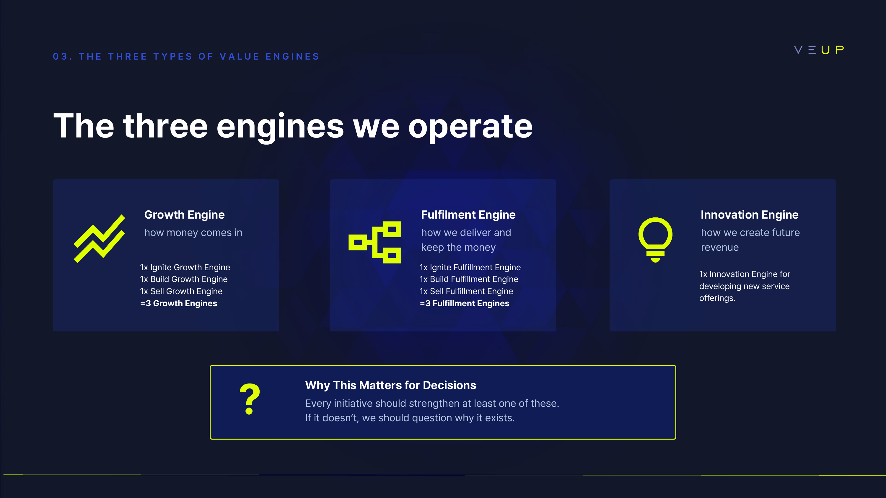
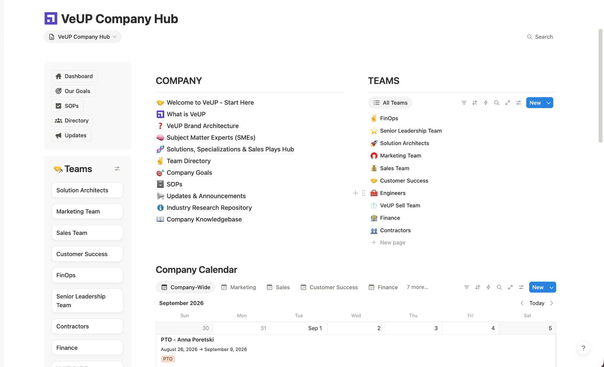
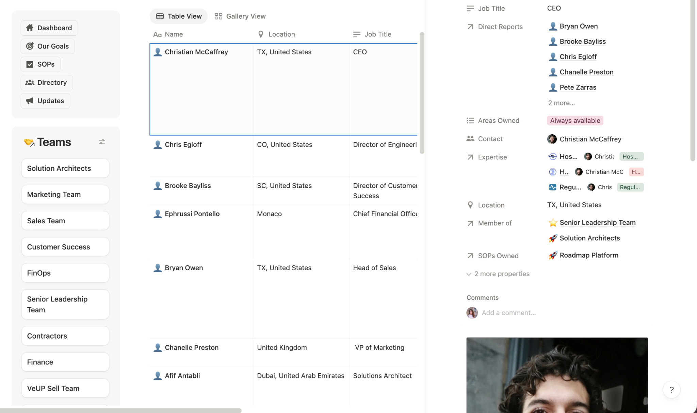
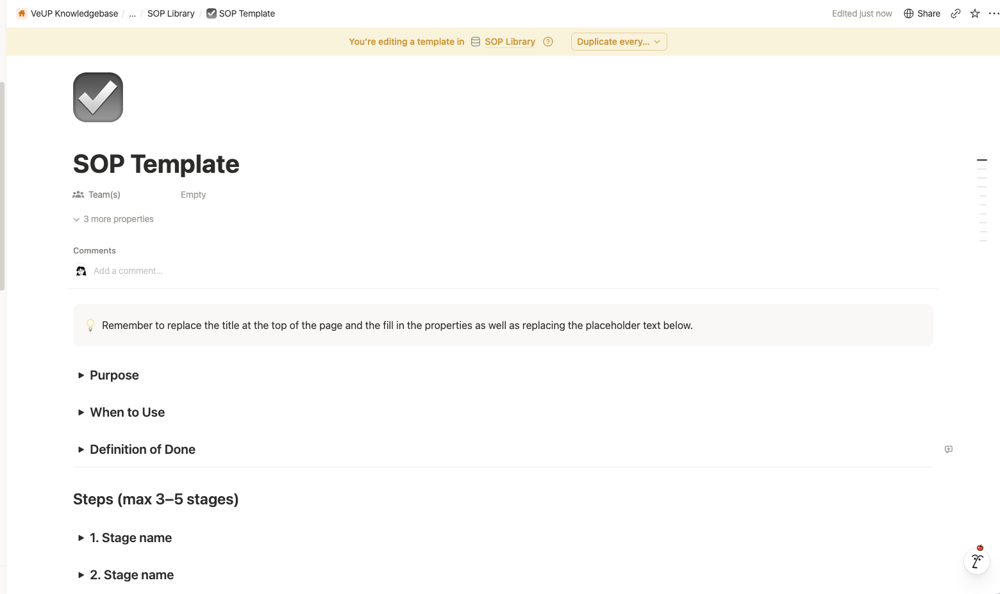
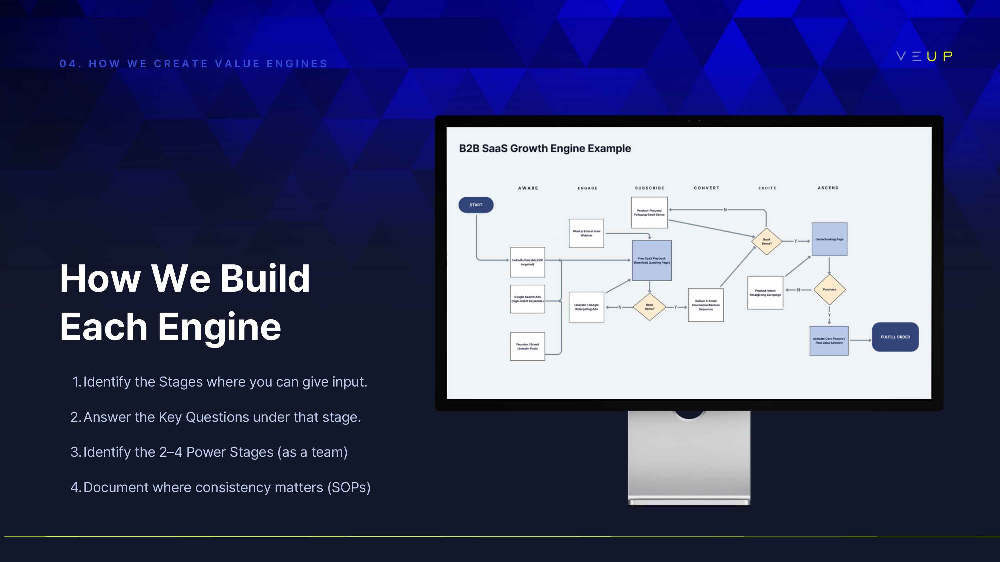
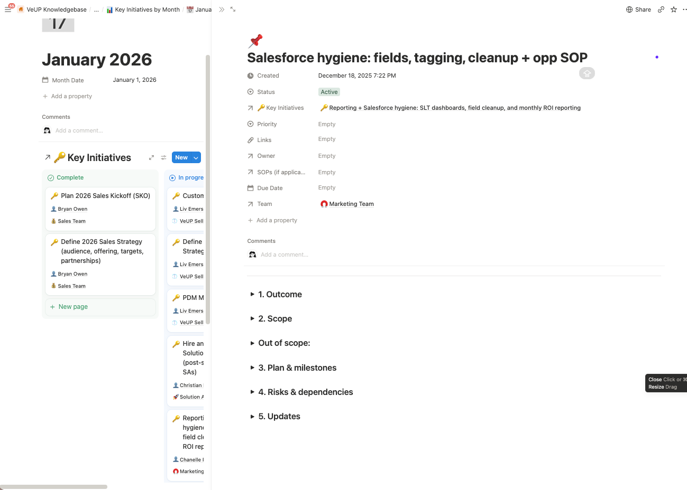
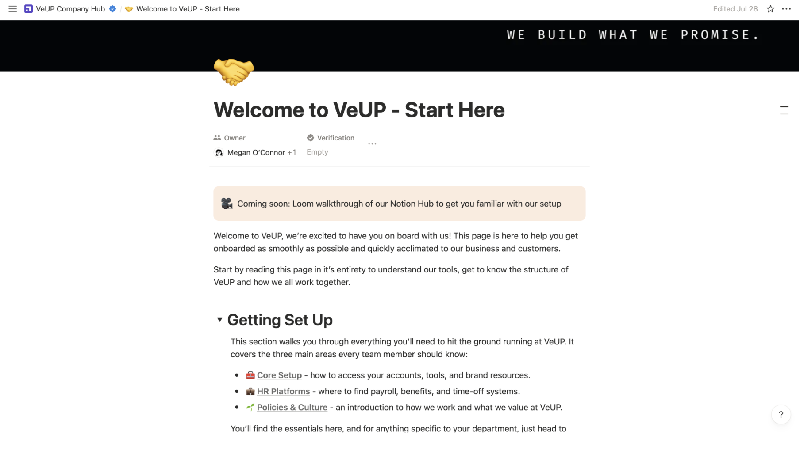

Operating-model design / Knowledge architecture / Leadership collaboration
Turning company strategy into coordinated action
Teams were busy, but their effort was not consistently connected to company goals. I led the design of a shared operating model with senior leadership, then built the system that made priorities, ownership and knowledge visible across teams, giving strategy a practical route into delivery.
01 / At a glance
- Role
- Operating-model designer and systems implementation lead.
- Challenge
- Duplicated effort and shifting priorities kept teams busy without a shared connection to company goals.
- Led
- Leadership alignment, prioritisation and operating-model design, supported by connected information architecture.
- Delivered
- A shared route from company goals to daily work, with connected knowledge, ownership and governance.
- Adoption and impact
- 10 teams; 30–33 employees. Estimated planning and coordination overhead reduced by 60–75%, based on employee feedback.

02 / The challenge
Busy teams, disconnected priorities
Strategic context often stayed within leadership conversations instead of reaching the teams responsible for delivery. Information lived in private folders, documents, Slack conversations and people’s memories, with little visibility beyond each person’s own work.
Teams duplicated effort or progressed work that later became redundant because it was not aligned with wider goals. Priorities changed without a clear, shared explanation, interrupting projects and making it difficult for people to understand the value of their contribution.
The problem was a missing connection between strategy and execution. Teams needed a common basis for deciding what mattered, coordinating their effort and using shared knowledge to build on work already done.
03 / The approach
Start with how the company works
I started by helping senior leadership clarify company goals and prioritise the work that would support them. We connected those priorities to the Value Engines through which the company created value, then translated them into team initiatives and delivery. The operating model came before the workspace.
I brought postgraduate study in Global Business Leadership and experience running my own business to this work. Drawing on Lean, OKRs, EOS and Value Engines, I helped leadership connect strategic ambition to operating decisions: what to prioritise, who should own it and how teams could deliver it together.
Company goals → Value Engines → teams → key initiatives → projects → SOPs → daily tasks
Three annual company goals connected to Growth, Fulfilment and Innovation Value Engines. The hierarchy gave leadership and teams a way to assess priorities at each level, explain the purpose of a project and check whether daily work supported the broader direction.


04 / System architecture
One set of information, different views of the work
I built the Notion system around connected databases, making goals, initiatives, projects, people, knowledge and SOPs visible in relation to one another. Team-specific views showed relevant work while preserving its connection to wider company priorities.
Ownership, dates, status and dependencies gave teams a shared view of what was underway and where their input was needed. Connecting knowledge to delivery made existing work and guidance easier to find and reuse.
Alignment could also mean a small change to existing work. Linking a marketing asset to a wider project and a clear call to action made it part of a connected funnel, with a purpose beyond producing another standalone deliverable.
Connected workspace
Strategy & execution
Connected priorities and ownership helped teams see why a project mattered and how it contributed to company goals.
Connected workspace
Knowledge
I connected the OS’s AI to our knowledge base, client-call transcripts, company meetings and context from Salesforce and Slack. People could ask questions and receive answers grounded in company-specific knowledge and current information, reducing repeated Slack queries and the wait for asynchronous responses from colleagues.

Connected workspace
Teams & people
10 team hubs, employee profiles and contextual calendar views connected individual work with team responsibilities and the wider organisation.

Connected workspace
Processes
A governed SOP library and reusable templates made delivery repeatable, with guidance teams could maintain and use themselves.

05 / Adoption and ownership
Making it usable without making myself indispensable
Adoption depended on a shared understanding of priorities and responsibilities. I worked with leadership to align goals and initiatives, explain how priorities should cascade to teams, and establish ownership for review and upkeep. Guidance helped teams use and maintain the system themselves.
The OS was adopted across 10 teams, supporting 30–33 employees. Rollout included around ten leaders trained and approximately five leadership workshops and training sessions.
Workshops + individual training
Leadership enablement
Through workshops and individual training, I helped leaders connect company goals to team initiatives, assess priorities and explain the purpose of the work beneath them. This gave leadership a shared framework for directing effort and communicating decisions across teams.

Review cadence + ownership rules
Governance built in
I established responsibilities for reviewing and maintaining priorities, projects and shared knowledge. Clear ownership and review routines gave teams a way to keep the system useful as priorities changed, with accountability built into everyday delivery.

Onboarding + reusable guidance
Self-service by design
I created onboarding guidance and reusable templates so teams could navigate the system, document processes and maintain their own work. This distributed responsibility for upkeep across the organisation, helping the operating model remain usable without depending on its original builder.

06 / What changed
What changed
A shared operating model connected company goals to departmental priorities, cross-functional initiatives and individual projects, with centralised knowledge and structured reporting.
- Teams using the OS
- 10
- Employees supported
- 30–33
- Estimated reduction in planning and coordination overhead
- 60–75%
Estimated weekly planning and coordination overhead fell from 2.5–4 hours to approximately one hour per employee, based on direct experience of the workflows, informal conversations and employee feedback. The post-implementation estimate includes reporting and status updates.
| Area | Before the OS | After the OS |
|---|---|---|
| Planning and coordination overhead | 2.5–4 hours per week | Approximately 1 hour per week |
| Strategic alignment | Unclear connection to company goals | Projects linked to company goals |
| Cross-functional visibility | Limited, with duplicated effort | Shared initiatives and ownership |
| Team priorities | Reactive, frequently changing | Three defined key initiatives per team |
| Knowledge retrieval | Up to three days of asynchronous chasing in difficult cases | Near-immediate self-service |
How the time reduction was estimated
These retrospective estimates compare workflows before and after implementation; they were not collected through formal time-tracking. The organisation-wide figures apply the same estimated per-person reduction across 30–33 employees. Reporting and status updates are included in the post-implementation estimate and are not deducted again.
| Weekly planning and coordination | Before | After | Estimated time saved |
|---|---|---|---|
| Per employee | 2.5–4 hours | Approximately 1 hour | 1.5–3 hours |
| Across 30–33 employees | 75–132 hours | 30–33 hours | 45–99 hours |
The lower end uses 30 employees × (2.5 − 1) hours = 45 hours per week. The upper end uses 33 employees × (4 − 1) hours = 99 hours per week. This equates to 180–396 hours over a four-week month.
The individual reduction is 60% at the 2.5-hour baseline and 75% at the four-hour baseline.
Estimated annual value of time freed
€160k–€315k
An illustrative salary-based model puts the annual value of the capacity released at approximately €160,000–€315,000. Less time spent organising work left more paid capacity available for projects linked to company goals.
Modelled salary-equivalent capacity, based on estimated pay and time savings. This is not a verified reduction in company spending.
How the value was estimated
The model uses a representative workforce of 32 within the reported 30–33 employees. Recovering 1.5–3 hours per person each week equates to 48–96 hours weekly, or 2,496–4,992 hours on a 52-week annualised basis. The same weekly saving is assumed across every salary band.
Approximate salary bands informed the compensation model below. These are educated estimates rather than verified payroll figures; the six salaries that were unknown use an illustrative €110,000 average. Dollar-denominated bands use an assumed conversion of $1 = €0.89.
| Employees | Assumed annual salary per person | Basis |
|---|---|---|
| 10 | €60,000 | Estimated salary band |
| 10 | $160,000 / €142,400 | Estimated salary band |
| 5 | $240,000 / €213,600 | Estimated salary band |
| 1 | $500,000 / €445,000 | Estimated salary |
| 6 | €110,000 | Illustrative assumption for unknown salaries |
The model totals €4.197 million in annual salaries. Using a 40-hour working week, 1.5–3 hours recovered represents 3.75–7.5% of paid time: €4.197 million × 3.75–7.5% = approximately €157,000–€315,000 annually. The headline rounds this to €160,000–€315,000.
This is an annualised estimate of the salary-equivalent value of time freed for other work. It assumes consistent weekly savings throughout the year and is not an audited financial result. Employer overheads, benefits, implementation costs and ongoing system administration are excluded. Reporting savings are already included in the time estimate; knowledge-retrieval waiting time is not monetised separately.
The system gave teams the context to understand why their contribution mattered and to question work that no longer served the broader direction, rather than continue simply because it had been assigned.
07 / What it demonstrates
What this project demonstrates
My ability to improve how an organisation turns strategy into coordinated action: align leadership, make priorities actionable and build the systems that sustain that connection across teams. The work gives people shared context to collaborate, challenge redundant activity and direct their effort towards company goals.